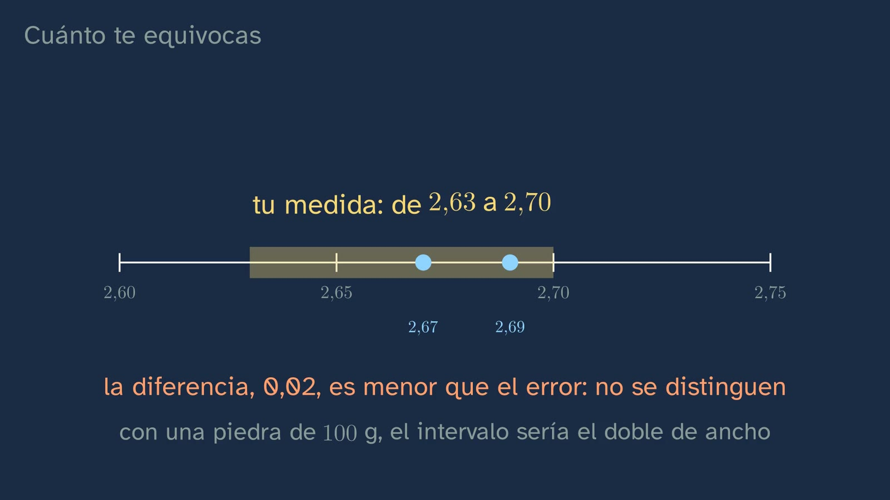

La Tierra pesa demasiado
En pocas palabras
La clase abre el tema con una pregunta que casi ningún libro se hace en voz alta: ¿cómo sabemos qué hay en el centro de la Tierra, si el pozo más profundo apenas pasa de doce kilómetros? Es una clase de laboratorio. El alumnado aprende a medir la densidad de una piedra con una balanza de cocina y un vaso de agua (la balanza hidrostática), a comprobar el montaje con un control (medio kilo de acero debe dar casi 8) y a decir cuánto se puede equivocar: una medida no es un número, es un intervalo. Después ve cómo se «pesó» la Tierra entera, con la montaña de Schiehallion (1774) y la balanza de Cavendish (1798), y descubre que la Tierra es el doble de densa que las rocas de su superficie: por dentro no puede ser como por fuera. Cierra con la «Tierra hueca», que fue una hipótesis razonable en 1692 y hoy es una creencia sin base, para distinguir una cosa de la otra.
Objetivo. Al terminar, el alumnado sabrá medir la densidad de una roca con una balanza y un vaso de agua, estimar cuánto se puede equivocar y explicar por qué la densidad media de la Tierra, el doble que la de sus rocas, demuestra que por dentro no es como por fuera.
Currículo
Real Decreto 243/2022, Biología, Geología y Ciencias Ambientales (texto consolidado del BOE, comprobado el 28/09/2026).
| Elemento | Qué dice el decreto | Dónde se trabaja |
|---|---|---|
| Saber básico (bloque D) | «Estructura, composición y dinámica de la geosfera. Métodos de estudio directos e indirectos.» | Toda la clase: la densidad media, un método indirecto |
| Saber básico (bloque A) | «Experiencias científicas de laboratorio o de campo: diseño, planificación y realización. Contraste de hipótesis. Controles experimentales.» | La balanza hidrostática y el control con acero |
| Saber básico (bloque A) | «Métodos de análisis de resultados científicos: organización, representación y herramientas estadísticas.» | Cuánto te equivocas: la medida como intervalo |
| Saber básico (bloque A) | «Fuentes fiables de información: búsqueda, reconocimiento y utilización.» | La Tierra hueca: ¿qué medida lo prueba, quién la hizo y dónde se publicó? |
| Competencia específica 2 | «Localizar y utilizar fuentes fiables, identificando, seleccionando y organizando información, evaluándola críticamente y contrastando su veracidad, para resolver preguntas planteadas relacionadas con las ciencias biológicas, geológicas y medioambientales de forma autónoma.» | La Tierra hueca |
| Competencia específica 3 | «Diseñar, planear y desarrollar proyectos de investigación siguiendo los pasos de las metodologías científicas, teniendo en cuenta los recursos disponibles de forma realista y buscando vías de colaboración, para indagar en aspectos relacionados con las ciencias biológicas, geológicas y medioambientales.» | La medida de la densidad |
| Criterio 2.2 | «Contrastar y justificar la veracidad de la información relacionada con los saberes de la materia, utilizando fuentes fiables y adoptando una actitud crítica y escéptica hacia informaciones sin una base científica como pseudociencias, teorías conspiratorias, creencias infundadas, bulos, etc.» | La Tierra hueca, frente a la densidad medida |
| Criterio 3.1 | «Plantear preguntas, realizar predicciones y formular hipótesis que puedan ser respondidas o contrastadas, utilizando métodos científicos…» | La predicción: ¿más densa, igual o menos que una piedra? |
| Criterio 3.3 | «Realizar experimentos y tomar datos cuantitativos y cualitativos sobre fenómenos biológicos, geológicos y ambientales, seleccionando y utilizando los instrumentos, herramientas o técnicas adecuadas con corrección y precisión.» | La balanza hidrostática |
| Criterio 3.4 | «Interpretar y analizar resultados obtenidos en un proyecto de investigación, utilizando, cuando sea necesario, herramientas matemáticas y tecnológicas, reconociendo su alcance y limitaciones…» | Cuánto te equivocas |
Lo que hay que traer de la ESO: las capas de la Tierra (corteza, manto y núcleo) y que la densidad es la masa entre el volumen. En la ESO, los métodos de estudio del interior terrestre se ven en Biología y Geología de 4.º, que es optativa: parte del alumnado no los ha visto nunca.
Cómo está construida la clase
Capítulos del vídeo: 0:00 Qué vamos a ver · 0:29 La pregunta · 1:27 Lo que ya sabes · 2:19 Medir una piedra · 5:00 Cuánto te equivocas · 7:32 Lo que pesa la Tierra · 10:03 La Tierra hueca · 11:54 Hazlo tú · 12:35 Para practicar y seguir pensando
Unos catorce minutos, en nueve capítulos. Es la primera clase de laboratorio del tema: primero el fenómeno y la medida; la explicación de qué hay dentro llega en las clases 2 a 5.
| Capítulo | Qué pasa | Por qué así |
|---|---|---|
| Qué vamos a ver | Nil, con bata en un laboratorio de geología, presenta el tema y sus cinco clases; dos son de laboratorio. | Saber dónde se está y adónde se va ordena lo que se aprende. |
| La pregunta | El pozo de Kola (12 262 m en 1989) frente a un radio de 6371 km: en una manzana de 8 cm, menos de una décima de milímetro. | La escala hace sentir el problema: nadie ha llegado, y aun así lo dibujamos. |
| Lo que ya sabes | Dibujar las capas y preguntarse cómo se sabe; y la predicción: ¿la Tierra es más densa que una piedra, igual o menos? | Recuperar lo sabido y comprometerse con una respuesta antes de medir. |
| Medir una piedra | La balanza hidrostática paso a paso: el empuje y por qué la balanza marca el volumen; el ejemplo 200/75 = 2,67; los dos errores del montaje; y el control con acero (500/64 = 7,8). | Un ejemplo resuelto entero; el error del experimento, a la vista; y la idea de control. |
| Cuánto te equivocas | Para qué sirve (dos piedras de 2,67 y 2,69: ¿distintas?), la cuenta con 74 y 76 g, el intervalo, y granito frente a basalto. Errores aleatorios y sistemáticos (una burbuja, los poros). | Las herramientas estadísticas del bloque A, con un problema que las hace necesarias. |
| Lo que pesa la Tierra | Schiehallion y Hutton (1774–1778), Cavendish (1798) y hoy, 5,51 g/cm³, frente a las rocas de la superficie. ¿Acertaste? | Dos métodos distintos, la misma conclusión: así se gana confianza en una medida indirecta. |
| La Tierra hueca | Halley (1692): la brújula de Londres se desvió 17° en poco más de un siglo, y su hipótesis de capas con huecos. Las medidas la dejaron sin sitio. | El error típico, desmontado con su historia, y la diferencia entre hipótesis y creencia sin base. |
| Hazlo tú | La medida en casa, con el control y tres repeticiones, y una misión: la piedra más densa. | Lo seguro, lo hace el alumno. |
| Para practicar | Recapitulación, tres ejercicios y una pregunta abierta. | Práctica espaciada: las soluciones abren la clase siguiente. |

Plan de una sesión de 50 minutos
Pensado para el laboratorio. Si no hay laboratorio, la medida se hace como demostración con una sola balanza, o se encarga para casa («Hazlo tú»).
| Minutos | Qué se hace |
|---|---|
| 0–5 | Sin vídeo: dibujar las capas de la Tierra y apostar si la Tierra es más densa, igual o menos que una piedra. |
| 5–17 | Vídeo de 0:00 a 7:32 (hasta «Lo que pesa la Tierra»): la balanza hidrostática, el control con acero y el intervalo. |
| 17–35 | La actividad: las rocas del instituto, con el control y tres medidas de cada una. |
| 35–40 | Vídeo de 7:32 a 10:03: lo que pesa la Tierra. Comparar sus rocas con 5,51. |
| 40–50 | Puesta en común: ¿se distinguen las rocas con su error? ¿Acertaron la predicción? La Tierra hueca (10:03 a 11:54), si da tiempo; si no, para casa con la hoja. |
Errores típicos y cómo se tratan
- «La Tierra pesa lo que sus rocas», y su versión extrema, la «Tierra hueca». La densidad media de la Tierra (5,51 g/cm³) es el doble que la del granito de la superficie (unos 2,65) y casi el doble que la del basalto (unos 3,0). Una Tierra de granito, sin contar lo que la comprime su propio peso, tendría la mitad de su masa. La Tierra hueca fue una hipótesis seria de Halley en 1692; hoy es una creencia sin base, porque sus defensores dejan fuera las medidas.
- «Una medida es un número exacto». Es un intervalo. Con una balanza que marca gramos enteros y una piedra de 200 g, la densidad sale con unas cuatro centésimas de margen (200/74 = 2,70; 200/76 = 2,63); con una de 100 g, el doble. Dos piedras de 2,67 y 2,69 no se pueden distinguir con esa balanza; un granito típico (2,65) y un basalto compacto (3,0), sí. Pero, como avisa el vídeo, los rangos se tocan (hay granitos y basaltos de 2,7 o 2,8), y la densidad sola no siempre dice qué roca es.
- Los errores del montaje. Si la piedra toca el fondo o las paredes, o si el hilo se ata a un lápiz apoyado en el vaso, la balanza pesa también la piedra y la lectura se dispara. El hilo se sujeta desde fuera.
- Los errores sistemáticos. Una burbuja pegada a la piedra la hace parecer más grande y menos densa; una roca porosa (piedra volcánica de barbacoa, ladrillo, arenisca) absorbe agua y ya no se sabe qué volumen se mide. Una pista: si la lectura baja mientras se espera, algo falla. Por eso, rocas compactas.
- «Los métodos indirectos son suposiciones». Son medidas. La clase 2 lo retoma: varias medidas independientes que coinciden pesan más que una muestra suelta.

Preguntas y soluciones
Para y piensa (dentro del vídeo)
- Dibuja las capas de la Tierra que aprendiste. ¿Cómo sabes que son así? Casi todo el alumnado dibuja corteza, manto y núcleo; casi nadie sabe decir cómo se sabe. De eso va el tema.
- La Tierra entera, de media, ¿será más densa que una piedra de la calle, igual o menos? Más densa: el doble.
- El acero aparta 64 g de agua: ¿cuánto da medio kilo? 500/64 = 7,8 g/cm³, casi el 7,87 del hierro: el montaje funciona.
- Si la Tierra es el doble de densa que las rocas que pisamos, ¿dónde está lo que pesa? Más abajo. Si las rocas de la superficie no pasan de 3,3 (el vídeo redondea: «no llegan a tres») y la media es 5,5, por dentro tiene que haber algo de más de 5,5.
De la hoja del alumnado
- ¿Por qué, al sumergir la piedra colgada, la balanza marca su volumen? El agua empuja la piedra hacia arriba con una fuerza igual al peso del agua que aparta (el principio de Arquímedes), y la piedra empuja el agua hacia abajo con la misma fuerza: eso es lo que nota la balanza. Marca, pues, los gramos de agua que aparta la piedra, y como cada gramo de agua ocupa un centímetro cúbico, ese número es el volumen de la piedra en cm³.
Para practicar (las soluciones abren la clase 2)
- Una piedra de 180 g aparta 62 g de agua. ¿Densidad, intervalo y qué roca podría ser? 180/62 = 2,90 g/cm³, entre 180/63 = 2,86 y 180/61 = 2,95. Un basalto (o un gabro): el granito no pasa de 2,8.
- ¿Qué parte del radio es la mina más profunda, de unos 4 km? 4/6371 = 0,063 %: una parte de cada 1600.
- Explica con un número por qué la Tierra no puede estar hueca. Su densidad media es 5,51 g/cm³, el doble que la de sus rocas de la superficie; una Tierra hueca sería menos densa que sus rocas, no más.

Para seguir pensando. ¿Se puede estar seguro de algo que nadie verá nunca? No tiene respuesta de libro. Da para distinguir tres clases de confianza: la de ver algo con los propios ojos, la de medirlo indirectamente con un método que se ha comprobado con un control, y la de que varios métodos independientes coincidan. La clase ofrece un caso de cada: la piedra en la balanza, el acero como control, y Schiehallion y Cavendish llegando por caminos distintos a la misma conclusión.
Una actividad para el aula
La densidad de las rocas del instituto (unos 20 minutos dentro del plan de 50, o una sesión entera si se miden más muestras; en grupos de tres o cuatro).
Material por grupo: una balanza (de cocina, de 1 g; con muestras pequeñas, mejor de 0,1 g), un recipiente de plástico con agua, hilo fuerte, un soporte para colgar la piedra desde fuera de la balanza, medio kilo de acero (una pieza o tuercas atadas) y tres o cuatro rocas o minerales compactos de la colección del centro.
- Predicción (criterio 3.1). Cada grupo ordena sus muestras de menos a más densa, sólo mirándolas y sopesándolas, y lo apunta.
- El control (bloque A: controles experimentales). Pesar el acero en seco; poner el recipiente con agua en la balanza y tararla; sumergir el acero colgado, sin tocar fondo ni paredes, y leer. Debe salir casi 8 (hierro, 7,87). Si no, revisar el montaje antes de seguir.
- La medida (criterio 3.3). Lo mismo con cada muestra, tres veces, sacándola y volviéndola a meter; anotar las tres lecturas y la media.
- El error (criterio 3.4). Con la última cifra de la balanza, calcular el intervalo de cada densidad (masa entre lectura más uno y entre lectura menos uno). ¿Se pueden distinguir dos muestras? Sólo si sus intervalos no se solapan.
- Puesta en común. ¿Se cumplió la predicción? Comparar con los valores de referencia: cuarzo 2,65, calcita 2,71, pirita 5,02 y magnetita 5,18 g/cm³ (Handbook of Mineralogy). ¿Alguna muestra está tan cerca de la densidad media de la Tierra (5,51) como un mineral de hierro?
Seguridad: los minerales con plomo, arsénico o mercurio (la galena, por ejemplo), con guantes, sin hacer polvo y lavándose las manos después; la pirita, bien seca después de sumergirla. Nada de rocas porosas: falsean la medida.
Fuentes
- Real Decreto 243/2022, texto consolidado (BOE): https://www.boe.es/buscar/act.php?id=BOE-A-2022-5521.
- El pozo de Kola, 12 262 m en 1989 (EarthDate, Universidad de Texas): https://www.earthdate.org/episodes/kola-superdeep. La mina más profunda, unos 4 km (Guinness World Records): https://www.guinnessworldrecords.com/world-records/66169-deepest-mine.
- Radio y densidad media de la Tierra (NASA, Earth Fact Sheet): https://nssdc.gsfc.nasa.gov/planetary/factsheet/earthfact.html.
- Schiehallion y Cavendish (APS News, 2008): https://www.aps.org/apsnews/2008/06/1798-cavendish-weighs-world. Cavendish, H. (1798). Experiments to determine the density of the Earth. Philosophical Transactions 88, 469–526, doi:10.1098/rstl.1798.0022.
- La balanza hidrostática (Universitat de València): https://www.uv.es/uvweb/physics/en/demonstrations-catalogue/fluids/medida-de-la-densidad-con-la-balanza-hidrostatica-metodo-de-arquimedes-galileo-1286053998293/DemoExp.html?id=1286110989231.
- Las densidades de los minerales de referencia: Handbook of Mineralogy (Mineralogical Society of America): cuarzo, calcita, pirita y magnetita.
- Seguridad con minerales tóxicos: Servicio de Parques Nacionales de EE. UU., Conserve O Gram 11/11 (2006): https://www.nps.gov/subjects/museums/upload/11-11_508.pdf.
- La ESO: Real Decreto 217/2022, texto consolidado (BOE): https://www.boe.es/buscar/act.php?id=BOE-A-2022-4975 («Estructura y dinámica de la geosfera. Métodos de estudio», en Biología y Geología de 4.º, materia de opción según el artículo 9.2).
- Densidades de las rocas (Geophysics for Practicing Geoscientists, CC BY 4.0): https://gpg.geosci.xyz/content/physical_properties/tables/density_igneous_rocks.html. La roca del manto bajo la corteza, modelo PREM (EarthScope): https://data.earthscope.org/app/products/portal/emc_model_viewer.html?id=EMC-PREM.
- Halley y la Tierra hueca (Royal Society): https://royalsociety.org/blog/2023/10/magnetic-halley/. Halley, E. (1692). Philosophical Transactions 16, 563–578.
- Fotos reales de las rocas, de James St. John, CC BY 2.0 (Wikimedia Commons).
Sobre esta clase
GinCol Lab es un canal gratuito de ciencia para curiosos. Nil es un personaje ilustrado con voz sintética, creada por ordenador, que no imita a ninguna persona conocida; el guion y esta ficha los escribe una IA (Claude, de Anthropic) y los revisa una persona antes de publicarse. Las fotos de las rocas son reales; el montaje de la balanza y los aparatos históricos están dibujados. Si ves un error, dínoslo: aprender también es corregir.
Esta ficha se publica con licencia Creative Commons Reconocimiento 4.0: puedes copiarla, adaptarla y usarla en tu aula citando a GinCol Lab.
Cómo citar esta ficha
GinCol Lab (2026). La Tierra pesa demasiado. Ficha docente de GinCol Lab: Biología, Geología y Ciencias Ambientales · 1.º de Bachillerato · La Tierra por dentro · Clase 1 de 5. https://gincollab.github.io/aula/biologia-geologia-ccaa/t01-c1/. CC BY 4.0.
Ficha docente de GinCol Lab · CC BY 4.0 · Código fuente y erratas